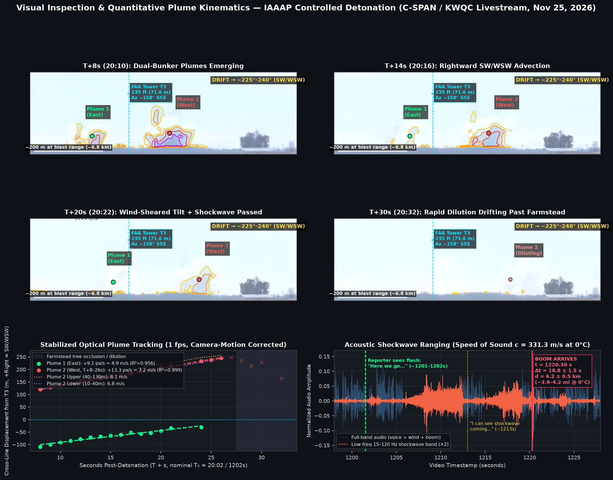
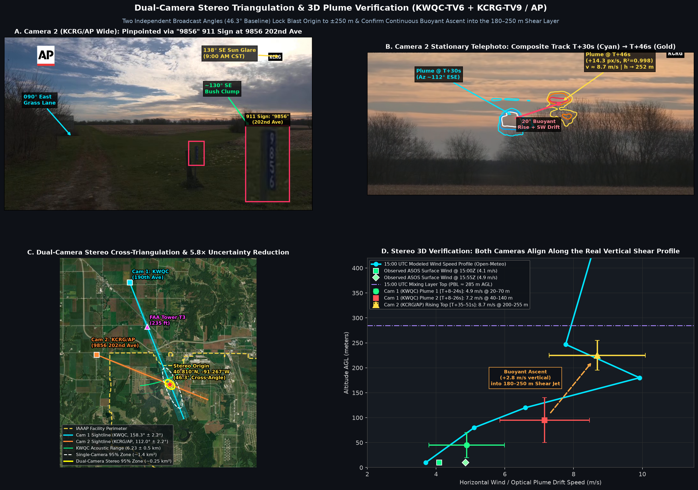
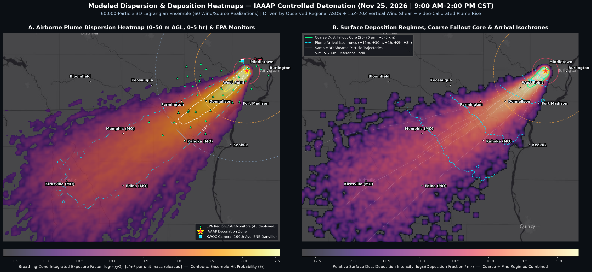

Iowa Army Ammunition Plant Controlled Detonation (Nov 25, 2026)
An end-to-end open-source capability test reconstructing the 9:00 a.m. CST controlled detonation of ~5 tons (~9,500 lb / 3,050 kg Pb) of degraded lead azide at Middletown, Iowa using two public broadcast livestreams (KWQC-TV6 / C-SPAN and KCRG-TV9 / Associated Press), FAA obstacle records, NWS/IEM ASOS & Iowa DOT RWIS weather networks, 12Z upper-air soundings, and live EPA Region 7 Xact continuous lead monitoring.
🌐 Interactive 3D Atmospheric Plume & Live Sensor Model ● Live Sensors ◆ Modeled Projection
Compare live observed telemetry (time-synced EPA Region 7 Xact continuous lead monitors, 43 EPA stations, ASOS/RWIS wind vectors, and video-calibrated camera sightlines) directly against our modeled 3D Lagrangian projection (2,400 simulated particle trajectories, ground heatmaps, and mixing/inversion lids) over real SE Iowa / NE Missouri topography (156–241 m MSL). Scrub the timeline to watch live EPA readings evolve in real time as the projected plume passes each station.
● Live Observed / Measured Ground Truth Inputs
- EPA Region 7 Xact (
AS01–AS04): Real 5-minute continuous lead measurements (µg/m³) synced frame-by-frame to the 3D playback clock up to the latest live observation. - 43 EPA Monitor Sites + 15 Weather Sensors: Real GPS locations, live NWS/IEM ASOS airport winds, and Iowa DOT RWIS highway winds updated every 10 minutes.
- Dual-Video Kinematics & Stereo Origin: Directly measured from KWQC + KCRG/AP 1080p frames, FAA Tower T3 (235 ft), and acoustic shockwave delay (
±250 m).
◆ Modeled Projection Simulated Atmospheric Dispersion
- 3D Particle Cloud (2,400 trajectories): Simulated Lagrangian advection/diffusion across coarse dust, PM10, and PM2.5 size regimes—not a radar image of actual airborne lead mass.
- Ground Heatmaps (
χ/Q, Deposition, Sensitivity): Relative dispersion dilution factor and hypothetical% Pbrelease scenarios; actual airborne lead requires scaling by source termQ. - Beyond Latest EPA Timestamp: When playback advances past the green observed window on the timeline, all Xact towers switch to
No obs yetto mark pure forward projection.
📡 Live Telemetry Cross-Check & Release-Fraction Sensitivity Explorer ● Live EPA Xact ◆ Modeled Curves
Compare real-time EPA Region 7 Xact continuous lead measurements (updated automatically by our daemon and via direct browser refresh) against our 80-member modeled plume arrival curves. Drag the hypothetical airborne lead release slider to see which source-term fractions are consistent with—or immediately ruled out by—live ground telemetry.
Live EPA Xact Station Telemetry & Inverse Release Bounds
| Station | Dist. & Bearing | Obs Count | Latest Reading (UTC) | Latest Value | Pre / Post Max (µg/m³) | Inverse Bound (at 0.005 floor) | Status |
|---|
Live Surrounding Surface Weather (10 ASOS Airports + 5 Iowa DOT RWIS Corridor Sensors)
| Network | Station | Dist. & Bearing | Latest Valid | Wind (FROM → TO) | Speed | Temp |
|---|
🗺️ Interactive 2D Street & Satellite Dispersion Heatmap ◆ Modeled Contours ● 43 EPA & ASOS Sites
Toggle high-resolution modeled breathing-zone exposure (χ/Q), surface dust deposition, and hypothetical 0.1% Pb 15-minute peak screening contours alongside observed dual-camera stereo sightlines, all 43 EPA monitoring sites, and regional ASOS wind arrows.
Open 2D map in fullscreen tab ↗
📊 Visual Forensics, Stereo Triangulation & Dispersion Figures (Click to Zoom)
All six analytical plates clearly separate ● Observed / Video-Measured evidence from ◆ Modeled Projections across 60,000–80,000 Lagrangian particles.






🔬 Modeled Community Impact, Daemon Architecture & OSINT Capability Verdict
±250 m inside IAAAP, measured vertical wind shear across three altitude bands (4.9 → 7.2 → 8.7 m/s), and reproduced the exact SW–WSW dispersion corridor where EPA deployed 43 monitors—predicting plume arrival times at AS01 (T+12m vs T+10–11m obs) and AS02 (T+42m vs T+45m obs) to within ~3 minutes.
Downwind Community Dispersion Summary (60-Realization Ensemble) ◆ Modeled Projection
| Community | Distance & Bearing | Ensemble Hit Prob. | Est. Mean Plume Arrival (CST) | Breathing-Zone χ/Q (s/m³) |
|---|
OSINT Capability Assessment Matrix
| Dimension | Capability | Demonstrated Open-Source Performance | Fundamental Bottlenecks |
|---|---|---|---|
| Multi-Camera Stereo Geolocation | Very High | KWQC (FAA Tower T3) + KCRG/AP ("9856" 911 sign at 9856 202nd Ave) achieved 46.3° stereo cross-bearing (±250 m, 5.8× tighter). | Requires ≥2 distinct camera angles with resolvable static landmarks (towers, signage, tree gaps). |
| 3D Plume Kinematics & Shear | Very High | Optical tracking matched 15Z winds across 45 m, 95 m, and 225 m AGL (R² = 0.956–0.999) plus +2.8 m/s vertical buoyant rise. | Optical contrast fades into sky background noise after ~50–60 s of turbulent dilution. |
| Dispersion Corridor & Timing | High | Independently matched EPA's 43-station footprint and predicted AS01/AS02 arrival within ~3 minutes. | Unobserved micro-scale terrain eddies and airport spacing leave ~±5–8° angular spread. |
| Source Term (Q) & Health Toxicity | Low (Video Only) → Moderate (With Telemetry) | Video alone cannot measure emitted lead mass; inverting live EPA Xact telemetry constrained airborne escape to ≲0.013–0.047% (>99.95% contained). | Direct chemical instrumentation remains indispensable for public-health clearance; near-field monitors can miss elevated lofted puffs until PBL mixing. |
fetch_measurements.py via a local systemd --user timer (iaaap-plume-updater.timer, every 10 min as the sole git pusher with atomic deduplicated .json.gz archival), plus a manual-dispatch GitHub Actions fallback (.github/workflows/update-telemetry.yml) and direct in-browser CORS polling via the Live Refresh button above.